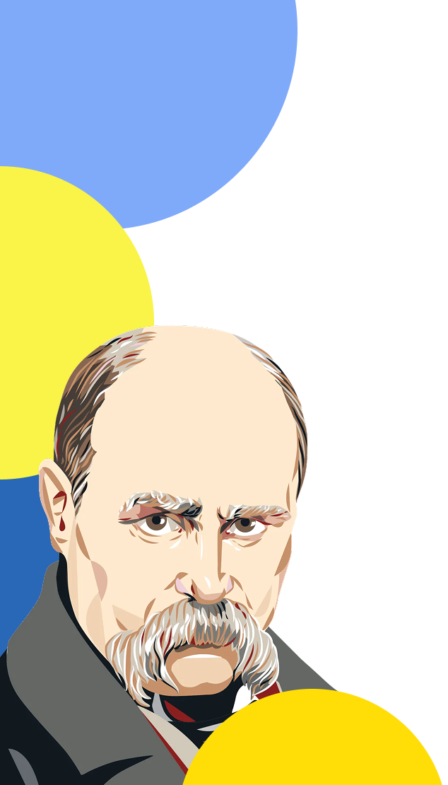

Каталог
Завдання

20
персоналій, які необхідно знати, для успішної здачі
НМТ
з історії України
Ім’я (А→Я)
Ім’я (Я→А)
Дата народження (спочатку старші)
Дата народження (спочатку молодші)
Дата смерті (спочатку раніші)
Дата смерті (спочатку пізніші)